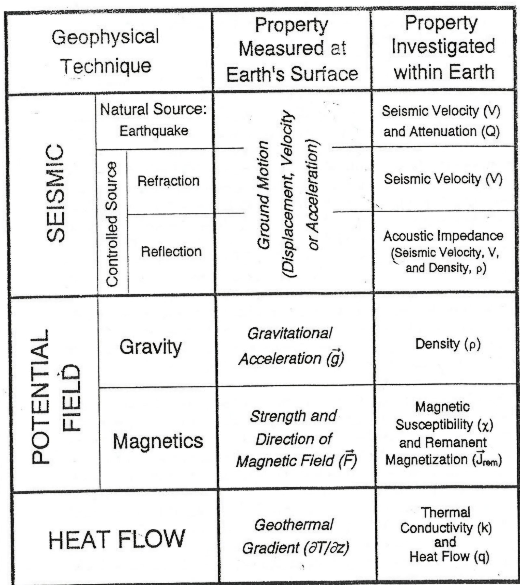
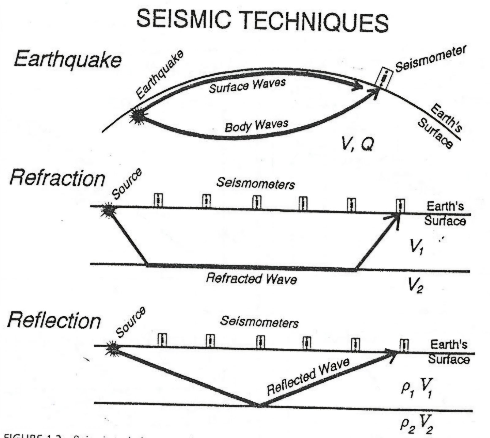
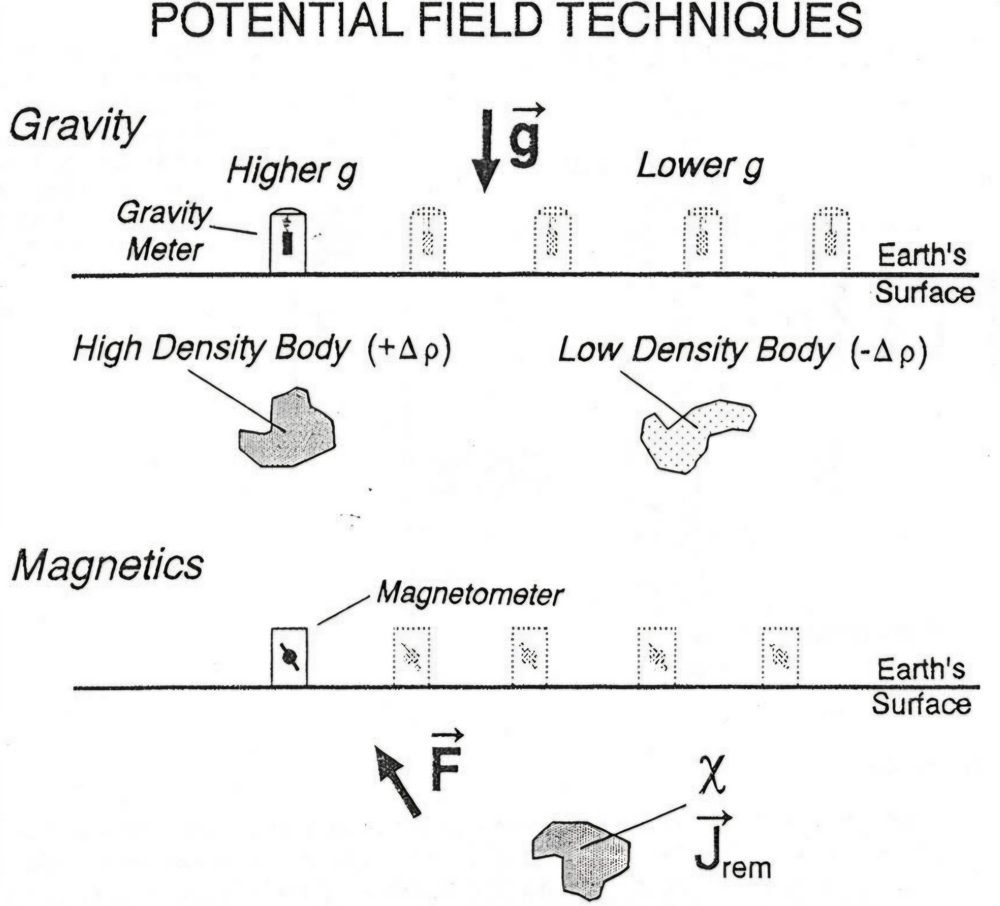
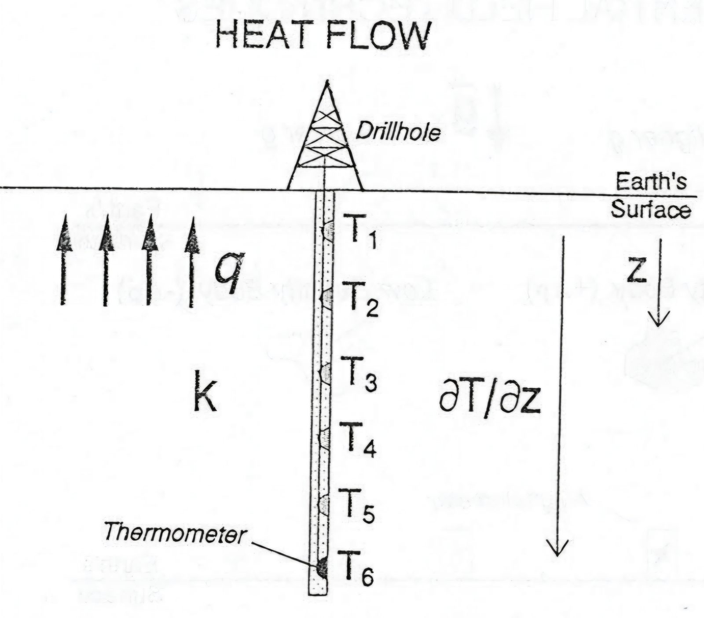
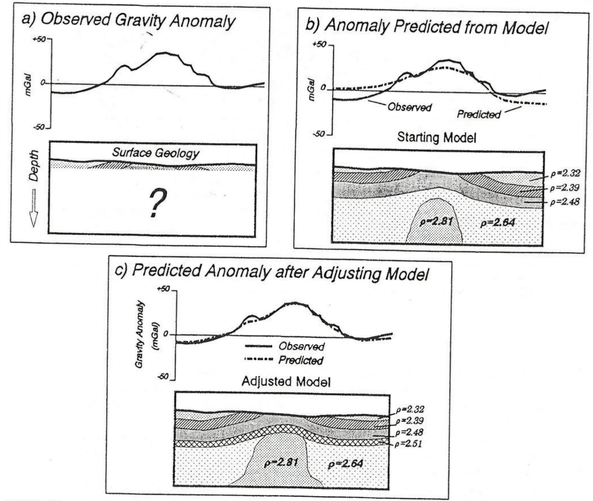
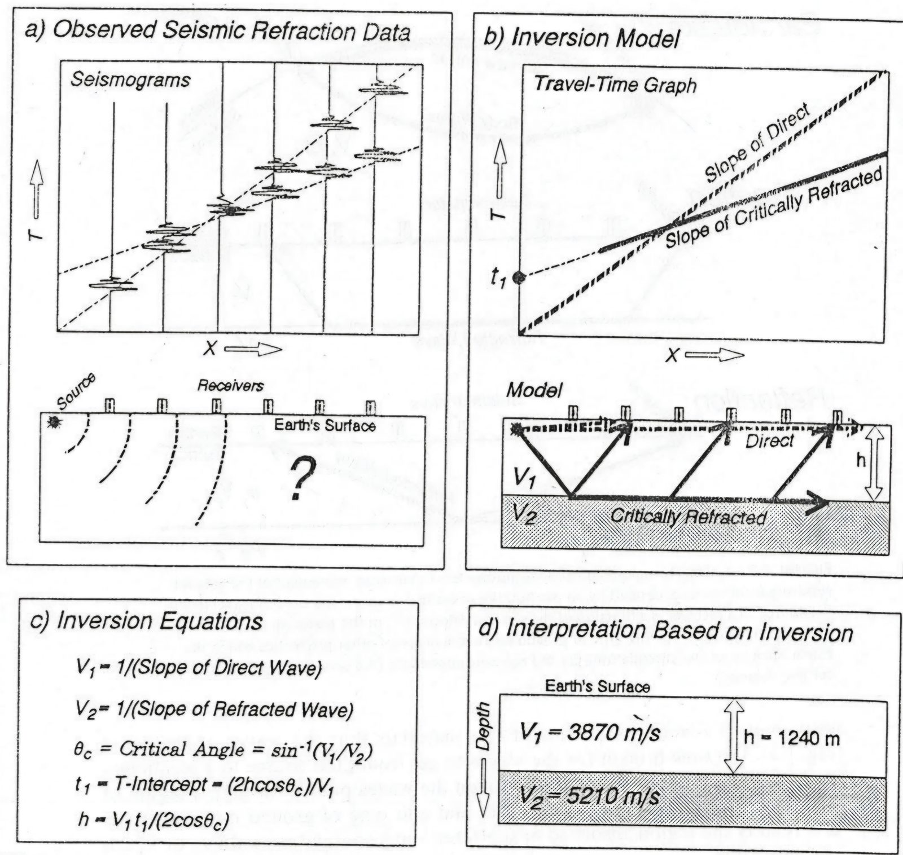
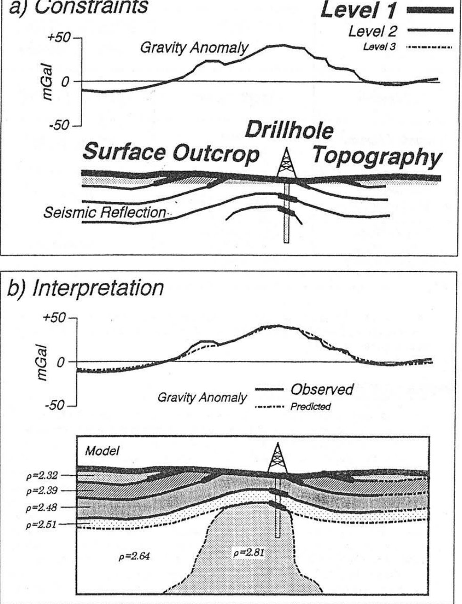
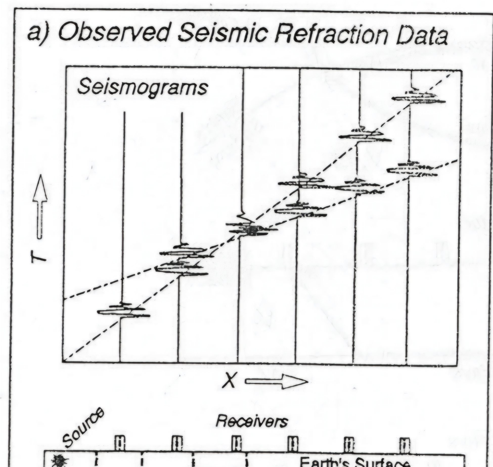
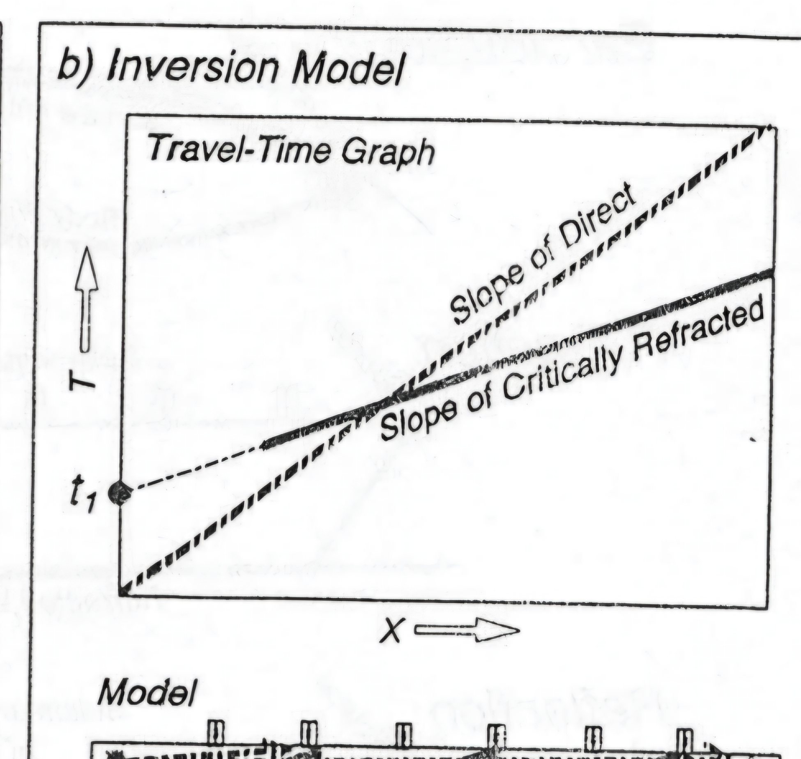

How do we know?
Week 1 · Course Orientation
用資料與證據理解地球
臺北市立大學 地球環境暨生物資源學系 第 115 學年第 1 學期。今天不是背完所有工具，而是弄懂：這學期我們要怎麼學地球物理。
What evidence supports this idea?
什麼證據支持這個想法？
Understanding the answer is your responsibility.
AI 可以產生答案，理解是你的責任。
觀察資料→提出模型→檢驗模型→修正模型→說明證據
這門課在學什麼
如果我們不知道板塊構造理論，只拿到地形、地震、火山、重力、磁力與熱流資料，能不能自己推論地球正在發生什麼事？
學科知識
Geophysics
震測、重力、地熱、地電、地磁、板塊構造。
雙語學習
CLIL / Science through English
單字、句型、科學論述、中英文報告。
資訊與 AI
Digital Literacy
Gemini、AI Agent、Colab、GitHub、PyGMT、3D 建模。

點圖可放大。期末每組完成 GitHub Pages 網站，並用中英文口頭報告。
18 週學習路線
點選週次，投影片式帶過整學期。Week 1 就是今天。
點一個週次，看任務重點。
| 評量 | 比例 | 看什麼 |
|---|---|---|
| 期中考 | 40% | 概念、原理、方法 |
| 作業 | 50% | 過程：Colab、PyGMT、AI 紀錄、網頁 |
| 平時 | 10% | 出席、討論、提問 |
今日三小時任務地圖
教師可把「現在進行」釘在當下任務；勾選表示全班已完成。休息可用上方 10 分鐘計時。
地球物理是什麼
How can we study something we cannot directly see? 我們量測地震波、重力、磁場、電性與熱流，再推論地下構造。
Observe→Analyze→Infer
| 方法 | 觀測什麼 | 可以推論什麼 |
|---|
今日核心問題：為什麼地震、火山、山脈與海溝常常不是隨機分布，而是集中在某些帶狀區域？先不要急著回答「板塊構造」。

地球物理導論
地質學可以看到景觀：地表的高山、大陸與海洋，幫助我們想像地球內部過程。地球物理學則是地質學與物理學的跨領域科學，用物理量測去「看見」地表之下的世界。
地球物理是什麼？
應用物理學原理研究地球。它結合地質觀察與物理量化分析，讓我們能夠推論無法直接切開的地下構造。
使用哪些方法？
在地表測量物理性質，再推斷地下結構。主要分為地震、位能場與熱流三大類。
如何解譯資料？
從觀測到模型，主要用兩種互補方法：正演模擬與反演。單一資料往往有多種解釋，因此需要約束。
三大類方法：觀測什麼、推論什麼
| 技術分類 | 主要方法 | 測量性質 | 研究性質 |
|---|---|---|---|
| 地震方法 SEISMIC | 天然／人工震源 | 地震動 | 波速 \(V\)、衰減 \(Q\)、密度 \(\rho\)。利用震波傳播特性繪製地下結構。 |
| 位能場 POTENTIAL | 重力法／磁力法 | 重力加速度 \(g\)／磁場 \(F\) | 密度 \(\rho\)／磁化率 \(\chi\)。測量地球天然場的微小變化，適合大範圍普查。 |
| 熱流 HEAT FLOW | 地溫測量 | 地溫梯度 \(\partial T/\partial z\) | 熱導率 \(k\)、熱流 \(q\)。研究地球內部熱量的傳導與分布。 |

地震技術
天然地震、折射、反射。量的是地表震動，推論的是 \(V\)、\(Q\)、\(\rho\)。

位能場
重力計讀到較高／較低的 \(g\)，磁力儀讀到 \(\vec F\)。地下的密度體與磁性體本身看不見。

熱流
鑽孔中量溫度 \(T_1\ldots T_6\)，得到地溫梯度，再結合熱導率 \(k\) 推論熱流 \(q\)。

圖表取材自 Lillie, Whole Earth Geophysics（1999）及 Hugging Face Space oceanicdayi/Geophysics_day1。
正演與反演
從觀測數據到地下模型，地球物理用兩種互補的解譯方法。這也是這門課教科學建模的核心。
正演 Forward Modeling
問：如果地下長這樣，我會測到什麼？
先假設一個地下模型，計算理論響應，再與實際觀測比較。解譯者反覆調整模型，直到理論與觀測匹配。
\(\text{Underground Model}\rightarrow\text{Predicted Data}\)
反演 Inversion
問：我測到了這些數據，造成它的地下結構是什麼？
把觀測當作輸入，透過數學求解，產生能夠解釋這些數據的地下模型。野外科學幾乎都走這個方向。
\(\text{Observed Data}\rightarrow\text{Possible Underground Model}\)
正演範例：重力異常 a→b→c
圖 1.7：(a) 觀測重力異常，地下是問號；(b) 起始模型的預測與觀測不合；(c) 調整模型後，預測曲線與觀測吻合。

反演範例：折射震測 a→b→c→d
圖 1.6：(a) 觀測原始地震數據；(b) 建立走時圖與兩層模型；(c) 套入反演公式；(d) 得到速度與厚度的解釋。課堂逐格操作請到「折射建模」。

解譯的黃金法則：約束
地球物理是間接觀測，單一數據可能有多種解釋。必須用約束縮小可能性。
- 硬約束：可直接觸摸與測量，例如露頭、鑽井岩芯。
- 軟約束：基於直接證據的合理推斷，例如有限鑽井繪成的地質圖、用震測剖面約束重力模型。
- 合理解釋：基於地質邏輯的理論假設，例如構造是否合理。

綜合範例：(a) 收集重力異常、露頭、鑽井、地形、震測反射；(b) 建立符合約束的密度模型，再計算理論重力異常，與觀測曲線比對。吻合代表目前模型受到良好約束，不是「地下真相」本身。
折射震測與科學建模循環
科學建模不是把公式套進資料，而是用一個可檢驗的模型，從觀測證據推論不可直接觀察的世界。建議上課時不要一次把四格全部給學生看。
a｜現象與證據 Observed Seismic Refraction Data
Here are the observations. What might the underground look like?
我們真正量到的只有：Source location、Receiver location、Seismograms、First-arrival time、Source–receiver distance。地下是一個大大的 ?。

Observable 看得到
\(x,\ T,\ \text{waveform}\)
Unobservable 想知道
\(V_1,\ V_2,\ h\)
學生不是先知道地下有兩層再去證明兩層，而是先看到：不同位置收到的震波，到達時間呈現某種規律。接著提出：What underground structure could produce these observations? 讓各組自己畫：一層、兩層、三層、傾斜地層。這就是 Design a Model。
b｜模型建構 Inversion Model / Travel-Time Graph
Which model can explain the change in slope?
右上其實同時包含兩個 representation。科學模型不是 reality，而是 a simplified representation of reality：「我假設地下可以暫時用兩個均質水平層來表示。」

Conceptual / Physical Model
上層 \(V_1\)、下層 \(V_2\)（\(V_2>V_1\)）、界面深度 \(h\)、direct wave、critically refracted wave。
Graphical Model
直達波是較陡的直線；臨界折射波是較平的直線。地下空間結構被轉換成走時圖的幾何結構。
\(\text{Subsurface structure}\rightarrow\text{Travel-time pattern}\)
c｜數學模型 Inversion Equations
How can mathematics help us test the model?
數學的角色不是考算式，而是把定性的地下模型變成可被資料檢驗的定量模型。
\[ V_1=\frac{1}{\text{slope of direct wave}} \]
\[ V_2=\frac{1}{\text{slope of refracted wave}} \]
\[ \sin\theta_c=\frac{V_1}{V_2} \]
\[ t_1=\frac{2h\cos\theta_c}{V_1}\qquad h=\frac{V_1 t_1}{2\cos\theta_c} \]
這時公式才出現學習需求：如果這個模型是真的，它必須符合什麼數學關係？
d｜解釋，不是地下真相 Interpretation Based on Inversion
Is this the answer, or is this a model?
理想答案：It is a model supported by the available evidence.
\(V_1=3870\ \mathrm{m/s},\quad V_2=5210\ \mathrm{m/s},\quad h=1240\ \mathrm{m}\)
不要說「所以地下就是這樣。」而要說：Based on our observations and assumptions, this is the model that explains the data.
\(\text{Data}+\text{Assumptions}+\text{Model}+\text{Mathematics}\rightarrow\text{Interpretation}\)
Data ≠ Conclusion。圖 d 的標題是 Interpretation Based on Inversion，不是 The Real Underground Structure。
還缺的一步：Evaluate → Revision
下一個問題不是「答案算完了嗎？」而是：Does this model reproduce the observed travel times?
\(r_i=T_{\text{observed},i}-T_{\text{predicted},i}\)
residual 很小：模型目前得到證據支持。出現系統性偏差：模型需要修改。可以改成三層、傾斜界面、或側向速度變化，然後再次 Model → Prediction → Compare → Revise。模型是 an iterative construction。
這也呼應 AI 教學理念：答案不是終點，驗證才是學習開始的重要部分。
完整四格｜Model-Based Scientific Inquiry
Observation→Representation→Model→Mathematics→Inference→Evaluation→Revision
模型建構循環
Student Model vs AI Model
看到 a 圖時，學生先自己提出地下模型，再問 AI：Based on these seismic arrivals, what underground structure might explain the observations? 然後比較 My model／AI model／Observed evidence。問：Which model is better supported by the data？AI 是 model-generating collaborator，不是 answer machine。
教學總結
We do not observe the underground structure directly. We construct a model that explains the observations, test it against evidence, and revise it when necessary.
我們不是直接看見地下構造，而是依據觀測建立模型，以證據檢驗模型，並在模型無法解釋資料時進行修正。
因此：地球物理本身就是非常典型的 model-based science。
地球物理的工程應用
地球物理方法非破壞、效率高、覆蓋範圍廣，在工程、環境、水文、考古與資源探勘中都派得上用場。
大地與土木工程
評估工址穩定性、地基與地質弱帶。常用折射／反射、GPR、ERT。
- 隧道開挖前用地震折射測定岩盤深度與完整性。
- 都市管線工程用透地雷達標定既有管線，防止誤挖。
環境工程
調查地下污染物分布。常用 ERT、電磁法、誘導極化。
- 電阻率法圈繪掩埋場滲出水造成的污染羽。
- 電磁法探測廢棄金屬儲槽或管線洩漏。
水利與水文地質
尋找地下水、描繪含水層、評估壩基滲漏。常用 ERT、TEM、折射。
考古學與資源探勘
考古：GPR、磁力、電磁，非破壞探測遺址。資源：反射震測找儲油構造；IP 探測金屬硫化物礦床。
專題：地熱探勘
地熱探勘像為地球做健康檢查，綜合多種方法描繪熱源、儲集層與熱水通道。
電磁法／大地電磁 MT
熱水富含鹽類、呈低電阻。MT 用天然電磁波反推數公里深的電阻率，圈繪熱水儲集層。
磁力：居禮點深度
磁性礦物約 580°C 失去鐵磁性。地熱活躍區居禮點偏淺，可判斷區域熱流。
震測
反射震測描繪斷層，而斷層常是地熱流體上升的通道。
重力
岩漿庫或高溫熱源密度較低。重力異常提供宏觀構造，常與其他方法互補。
資料處理環境：本機 Conda 與 GitHub Codespaces
開始處理資料前需要科學計算環境。本機可用 Miniconda 建立 pygmt 環境（Python 3.9、PyGMT、ObsPy、Jupyter）。Codespaces 則免安裝、環境一致，適合大班。
建議流程：Fork 課程 Repo → 建立 Codespace → 完成 notebook → Commit／Push → 用 Pull Request 繳交，並在 PR 中留下觀察與討論。
conda create --name pygmt python=3.9 numpy pandas xarray netcdf4 packaging gmt conda activate pygmt conda install pygmt obspy jupyter pip install streamlit matplotlib
CER 課堂白板
Claim 主張 · Evidence 證據 · Reasoning 推理。可載入範例，也可即席輸入，用「投影放大」給全班看。
Claim
Evidence
Reasoning

DEAR 科學建模循環
模型不是最後答案，而是可被測試、修正的解釋工具。點 D／E／A／R，把小組討論寫在右側。
D — 我們認為正在發生什麼？

CLIL 句型牆
整學期反覆使用的 10 句。點編號切換；「全班朗讀」會變成投影大字。
1 / 10
We observe that ______.
我們觀察到＿＿＿＿。
科學論述六句組
句型抽卡
AI 是協作者，不是答案機器
1 學生問題
提出好奇、定義問題。
2 AI 建議
獲得想法與多元觀點。
3 我的判斷
選擇有用的內容。
4 找證據
查資料、核對事實。
5 驗證
確認合理性與限制。
6 修正
調整想法，持續改進。
AI 對話紀錄 = 學習證據。 Prompt → AI response → My evaluation → Evidence → Revision。

從問題到 GitHub Pages
Gemini→Colab / PyGMT→AI Agent→GitHub→Pages→同儕報告
Question → Data → Code → Figure → Interpretation → AI Log → Webpage

GitHub 今日任務
建立 repository（建議 geophysics-learning-2026），寫下第一版 README。
Colab 今日任務
print("Hello, Geophysics!")，並記住走時 t = d / v。
Gemini 探究 Prompts
課堂示範可直接複製。原則：不要直接要答案，先要三個可檢驗的假說。
第一堂課作業
作業一｜工具確認
- GitHub 帳號與練習 repo 連結
- Google Colab notebook
- Gemini 對話紀錄
- 小組名單
作業二｜AI 探究紀錄
主題：為什麼地震、火山、山脈與海溝常常集中在某些帶狀區域？
繳交：對話紀錄、CER、DEAR、100–200 字反思。
下週：PyGMT — Visualizing the Earth。請帶筆電、Google 帳號、GitHub 帳號與今天的 AI 紀錄。
Exit Ticket
離開前三句。可存在這台電腦，也可下載成 Markdown。